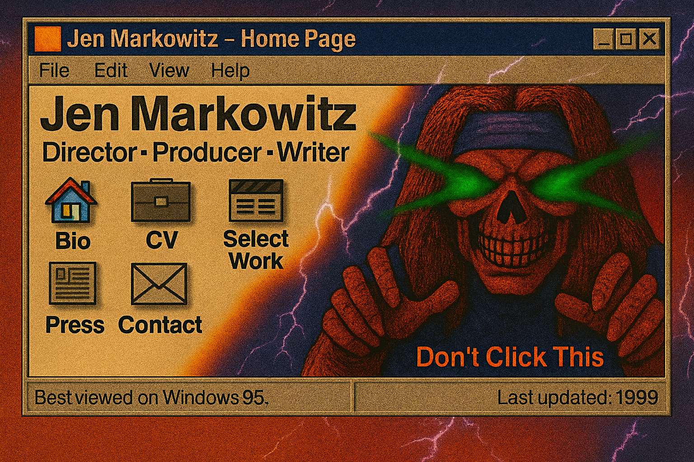

Jen Markowitz is an award winning creative in the film and television space, and is experienced in documentary, scripted, and competition reality.
Add press links, articles, festivals, awards, interviews, etc. here when you’re ready.
Email: jenmarkowitz@gmail.com
Instagram: @jen.markowitz